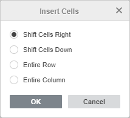
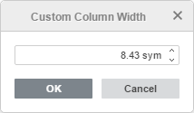
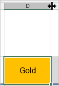
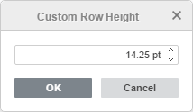
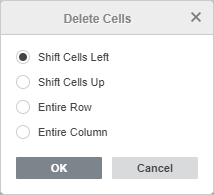

Upravljanje ćelijama, redovima i kolonama
U Spreadsheet Editor možete umetnuti prazne ćelije iznad ili levo od izabrane ćelije u radnom listu. Takođe možete umetnuti ceo red iznad izabranog ili kolonu levo od izabrane kolone. Da biste olakšali pregled velike količine informacija, možete sakriti pojedine redove ili kolone i ponovo ih prikazati. Takođe je moguće odrediti visinu određenog reda i širinu kolone.
Umetanje ćelija, redova, kolona
Da biste umetnuli praznu ćeliju levo od izabrane ćelije:
- desnim klikom izaberite ćeliju levo od koje želite da umetnete novu,
- kliknite na ikonu Umetni ćelije koja se nalazi na kartici Home na gornjoj traci sa alatkama ili izaberite stavku Umetni iz menija na desni klik i koristite opciju Pomeri ćelije udesno.
Program će pomeriti izabranu ćeliju udesno kako bi umetnuo praznu ćeliju.
Da biste umetnuli praznu ćeliju iznad izabrane ćelije:
- desnim klikom izaberite ćeliju iznad koje želite da umetnete novu,
- kliknite na ikonu Umetni ćelije koja se nalazi na kartici Home na gornjoj traci sa alatkama ili izaberite stavku Umetni iz menija na desni klik i koristite opciju Pomeri ćelije nadole.
Program će pomeriti izabranu ćeliju nadole kako bi umetnuo praznu ćeliju.
Da biste umetnuli ceo red:
- izaberite ceo red klikom na njegovo zaglavlje ili ćeliju u redu iznad kog želite da umetnete novi,
Napomena: da biste umetnuli više redova, izaberite potreban broj redova.
- kliknite na ikonu Umetni ćelije koja se nalazi na kartici Home na gornjoj traci sa alatkama i koristite opciju Ceo red,
ili desnim klikom na izabranu ćeliju izaberite stavku Umetni iz menija na desni klik, zatim izaberite opciju Ceo red,
ili desnim klikom na izabrani red (redove) koristite opciju Umetni gore iz menija na desni klik.
Program će pomeriti izabrani red nadole kako bi umetnuo prazan red.
Da biste umetnuli celu kolonu:
- izaberite celu kolonu klikom na njeno zaglavlje ili ćeliju u koloni levo od koje želite da umetnete novu,
Napomena: da biste umetnuli više kolona, izaberite potreban broj kolona.
- kliknite na ikonu Umetni ćelije koja se nalazi na kartici Home na gornjoj traci sa alatkama i koristite opciju Cela kolona,
ili desnim klikom na izabranu ćeliju izaberite stavku Umetni iz menija na desni klik, zatim izaberite opciju Cela kolona,
ili desnim klikom na izabranu kolonu (kolone) koristite opciju Umetni levo iz menija na desni klik.
Program će pomeriti izabranu kolonu udesno kako bi umetnuo praznu kolonu.
Takođe možete koristiti prečicu na tastaturi Ctrl+Shift+= da otvorite dijalog za umetanje novih ćelija, izaberete opciju Pomeri ćelije udesno, Pomeri ćelije nadole, Ceo red ili Cela kolona i kliknete na OK.

Pomeranje redova i kolona
Da biste pomerili sadržaj reda ili kolone, izaberite ga klikom na broj (za redove) ili slovno zaglavlje (za kolone), držite levi taster miša, a zatim prevucite i otpustite na željenu lokaciju u tabeli.
Sakrivanje i prikazivanje redova i kolona
Da biste sakrili red ili kolonu:
- izaberite redove ili kolone koje želite da sakrijete,
- desnim klikom na izabrane redove ili kolone izaberite opciju Sakrij iz menija na desni klik.
Da biste prikazali sakrivene redove ili kolone, izaberite vidljive redove iznad i ispod sakrivenih redova ili vidljive kolone levo i desno od sakrivenih kolona, desnim klikom otvorite meni i izaberite opciju Prikaži.
Promena širine kolone i visine reda
Širina kolone određuje koliko znakova sa podrazumevanim formatiranjem može da se prikaže u ćeliji kolone. Podrazumevana vrednost je 8.43 simbola. Da biste je promenili:
- izaberite kolone koje želite da promenite,
- desnim klikom na izabrane kolone izaberite opciju Postavi širinu kolone iz menija na desni klik,
- izaberite jednu od dostupnih opcija:
- izaberite opciju Automatski prilagodi širinu kolone da biste automatski prilagodili širinu svake kolone prema njenom sadržaju ili
-
izaberite opciju Prilagođena širina kolone i navedite novu vrednost od 0 do 255 u prozoru Prilagođena širina kolone, zatim kliknite OK.

Da biste ručno promenili širinu jedne kolone, pomerite kursor miša preko desne ivice zaglavlja kolone tako da se kursor pretvori u dvosmernu strelicu . Prevucite ivicu ulevo ili udesno da postavite prilagođenu širinu ili dvaput kliknite mišem da automatski promenite širinu kolone prema njenom sadržaju.

Podrazumevana vrednost visine reda je 14.25 tačaka. Da biste je promenili:
- izaberite redove koje želite da promenite,
- desnim klikom na izabrane redove izaberite opciju Postavi visinu reda iz menija na desni klik,
- izaberite jednu od dostupnih opcija:
- izaberite opciju Automatski prilagodi visinu reda da biste automatski prilagodili visinu svakog reda prema njegovom sadržaju ili
-
izaberite opciju Prilagođena visina reda i navedite novu vrednost od 0 do 408.75 u prozoru Prilagođena visina reda, zatim kliknite OK.

Da biste ručno promenili visinu jednog reda, prevucite donju ivicu zaglavlja reda.
Brisanje ćelija, redova, kolona
Da biste obrisali nepotrebnu ćeliju, red ili kolonu:
- izaberite ćelije, redove ili kolone koje želite da obrišete,
- kliknite na ikonu Obriši ćelije koja se nalazi na kartici Home na gornjoj traci sa alatkama ili izaberite stavku Obriši iz menija na desni klik i izaberite odgovarajuću opciju:
ako koristite opciju Pomeri ćelije ulevo, ćelija desno od obrisane biće pomerena ulevo;
ako koristite opciju Pomeri ćelije nagore, ćelija ispod obrisane biće pomerena nagore;
ako koristite opciju Ceo red, red ispod izabranog biće pomeren nagore;
ako koristite opciju Cela kolona, kolona desno od obrisane biće pomerena ulevo;
Takođe možete koristiti prečicu na tastaturi Ctrl+Shift+- da otvorite dijalog za brisanje ćelija, izaberete opciju Pomeri ćelije ulevo, Pomeri ćelije nagore, Ceo red ili Cela kolona i kliknete na OK.

Uvek možete vratiti obrisane podatke pomoću ikone Opozovi na gornjoj traci sa alatkama.